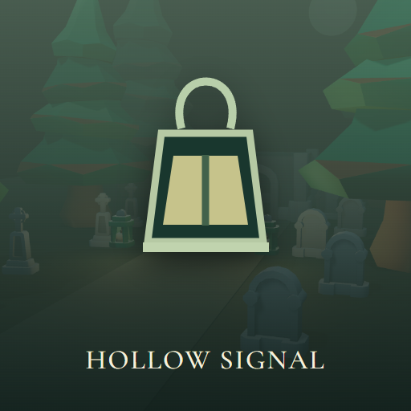

<- all projects

Hollow Signal
PC
Volume
Live
Follow the signal through the fog. Escape before it learns your voice.
A night caretaker searches a flooded cemetery for a missing survey team. Their handheld receiver repeats your voice a few seconds before you speak, and every recovered tape brings the source closer. Move quietly between the graves, since fast steps draw the Listener, and use your lantern knowing it also reveals you to the Keeper. Two tapes open the iron gate. There are 4 cemetery sectors, 18 recorded voices, 3 watcher behaviors and 3 endings, one of them only for those who recover every tape, plus a story campaign, a daily challenge and an endless run.